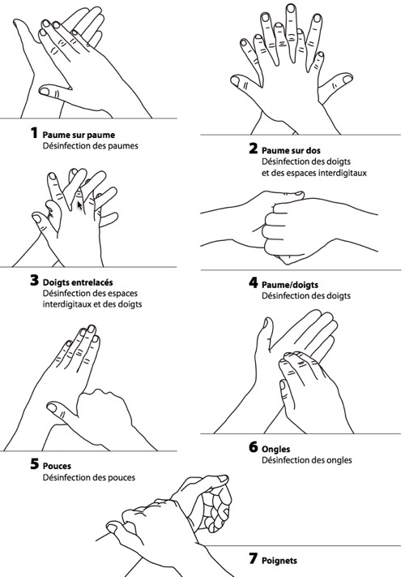

Bienvenue Sur Medical Education
L'hygiene des mains
De nombreuses denominations sont utilisees, pour differencier les differents types de lavage de mains. Il est apparu important de retenir, pour la clarte de ces recommandations, une denomination unique.
| Terminologie europeenne et equivalences | ||
| Denominations europeennes et franeaises | Denominations courantes |
equivalents possibles utilisees dans les etablissements de Sante en France |
| Lavage simple des mains [pas de norme de reference] |
Lavage simple | Lavage des mains Lavage hospitalier Lavage a social a [USA] |
| Lavage hygienique des mains Norme de reference : EN 1499 ou NF T72-501 Traitement hygienique des mains par frictions Norme de reference : EN 1500 ou NF T72-502 |
Lavage antiseptique Lavage hygienique Frictions hygieniques des mains Antisepsie rapide des mains |
Lavage desinfectant Desinfection des mains Desinfection des mains par frictions |
| Desinfection chirurgicale des mains par lavage Norme de reference : pr EN 12791 ou T72-503 |
Lavage chirurgical des mains | Lavage chirurgical des mains Desinfection chirurgicale des mains par lavage |
| Desinfection chirurgicale des mains par frictions Norme de reference : pr EN 12791 ou T72-503 |
Desinfection chirurgicale des mains Antisepsie chirurgicale des mains |
Frictions chirurgicales |
Principes fondamentaux
La tenue des mains
- Ongles courts, sans vernis, pas de faux ongles.
- Mains et avant-bras depourvus de bijoux : ni alliance, ni bagues, ni bracelets, ni montre…
- Tenue a manches courtes.
- Le port des gants ne dispense pas du lavage des mains.
Le materiel
Il faut proscrire :
- Le savon en pain.
- Les essuie-mains en tissu.
- Le sechage des mains a air chaud.
- Le transvasage du savon liquide d'un recipient dans un autre.
Buts
- Eliminer les souillures.
- Permet la diminution de la flore transitoire.
- Previent la contamination.
Indications
- Prise de service/ fin de service.
- Gestes de la vie courante : se coiffer, se moucher…
- Activites hetelieres.
- Lors des soins d'hygiene, de confort et de continuite de la vie.
- Avant et apres le port des gants a usage unique.
- Lors de soins infirmiers non invasifs.
- Apres tout soin infirmier.
- Mains visiblement sales et ou souillees par des contaminations non microbiennes.
- Soins de contact avec la peau saine.
Materiels
- Savon doux (non desinfectant).
- Eau du reseau.
- Essuie-mains a usage unique non steriles.
Realisation du lavage simple des mains
- Se mouiller les mains.
- Prendre une dose de savon liquide.
- Savonner durant 30 secondes, mains et poignets avec le savon doux en insistant plus particulierement sur les pouces, le dos des doigts, le dos des mains, le pourtour des ongles, les espaces interdigitaux.
- Rincer abondamment en allant des mains vers les coudes, les mains se situant toujours au-dessus des coudes : en commeneant par les doigts et en finissant par les poignets afin de ne pas ramener les germes au bout des mains.
- Secher par tamponnement, des doigts vers les poignets, avec les essuie-mains a usage unique non sterile.
- Fermer le robinet avec l'essuie-mains.
- Jeter les essuie-mains dans la poubelle a commande non manuelle.
- Duree de 30 secondes.
Le lavage hygienique ou antiseptique des mains
Buts
- Eliminer la flore transitoire.
- Diminuer la flore residente.
Indications
- Apres tout contact avec un patient en isolement septique et/ou infecte ou avec son environnement.
- Apres tout contact accidentel avec du sang ou des liquides biologiques.
- Avant realisation d’un geste invasif (catheter peripherique, sonde ou urinaire et autres dispositifs analogues).
- Avant tout acte sterile.
- Entre deux patients, apres tout geste potentiellement contaminant.
- Avant tout contact avec un patient en isolement protecteur.
- Avant realisation d’une ponction lombaire, d’ascite, articulaire ou autres situations analogues.
- Avant manipulation des dispositifs intra-vasculaires (catheters), drains pleuraux, chambre implantable, et autres situations analogues.
- En cas de succession de gestes contaminants pour le meme patient.
- Avant preparation et reconstitution alimentaire en restauration collective ou en office individuel.
Materiels
- Savon liquide antiseptique : savon antiseptique polyvidone iodee (Betadine Scrube) ou savon a base de chlorhexidine (Hibiscrube).
- Eau du reseau.
- Essuie-mains a usage unique non steriles.
Realisation du lavage hygienique ou antiseptique des mains
- Se mouiller les mains.
- Prendre une dose de savon liquide.
- Savonner durant une minute, mains et poignets avec le savon doux en insistant plus particulierement sur les pouces, le dos des doigts, le dos des mains, le pourtour des ongles, les espaces interdigitaux.
- Rincer abondamment en allant des mains vers les coudes, les mains se situant toujours au-dessus des coudes : en commeneant par les doigts et en finissant par les poignets afin de ne pas ramener les germes au bout des mains.
- Secher par tamponnement, des doigts vers les poignets, avec les essuie-mains a usage unique non sterile.
- Fermer le robinet avec l'essuie-mains.
- Jeter les essuie-mains dans la poubelle a commande non manuelle.
- Duree de 1 minute : le savonnage prolonge permet l'action de l'antiseptique.
La desinfection chirurgicale des mains par lavage
Buts
- Eliminer la flore transitoire.
- Diminuer de faeon significative la flore residente.
Indications
- Avant tout acte chirurgical, d'obstetrique et de radiologie interventionnelle.
- Avant tout geste pour lequel une asepsie de type chirurgical est chirurgicale requise : pose de catheter central, rachidien, chambre implantable, ponction amniotique, drain pleural et autres situations analogues
Materiels
- Savon liquide antiseptique : savon antiseptique polyvidone iodee (Betadine Scrube) ou chlorhexidine (Hibiscrube).
- Eau filtree bacteriologiquement.
- Brosse a ongles sterile a usage unique.
- Essuie-mains steriles.
Realisation de la desinfection chirurgicale des mains par lavage
- Technique en 3 temps :
- 3 phases de lavage.
- Temps total de 5 minutes.
- Mouiller les mains et les avant-bras.
- Savonner les mains et les avant-bras, 1 minute pour chaque cete.
- Brosser les ongles 1 minute (30 secondes /main).
- Rincer les mains et poignets.
- Savonner les mains et les poignets 1 minute.
- Rincer les mains et les avant bras.
- Secher avec des essuie-mains steriles.
Le traitement hygienique des mains par frictions
Buts
- Eliminer la flore transitoire.
- Diminuer la flore residente.
Indications
- Substitution au lavage des mains (ne le remplace pas).
IL a ete demontre que le traitement hygienique des mains par frictions est plus efficace que le lavage simple et le lavage hygienique ou antiseptique des mains.
N.B. : Les solutions hydro-alcooliques ne sont pas sporicides, ils ne sont donc pas efficaces sur les spores du Clostridium difficile. Il ne faut donc pas les utiliser en cas de diarrhee. Ils ne sont pas non plus efficaces sur les ectoparasites (gales, poux, lentes…).
Indications pour les procedures a risques infectieux faibles
- Prise de service/ fin de service.
- Gestes de la vie courante : se coiffer, se moucher…
- Activites hetelieres.
- Lors des soins d'hygiene, de confort et de continuite de la vie.
- Avant et apres le port des gants a usage unique.
- Lors de soins infirmiers non invasifs.
- Apres tout soin infirmier.
- Soins de contact avec la peau saine.
Indications pour les risques infectieux intermediaires
- Apres tout contact avec un patient en isolement septique et/ou infecte ou avec son environnement.
- Avant realisation d’un geste invasif (catheter peripherique, sonde ou urinaire et autres dispositifs analogues).
- Avant tout acte sterile.
- Entre deux patients, apres tout geste potentiellement contaminant.
- Avant tout contact avec un patient en isolement protecteur.
- Avant realisation d’une ponction lombaire, d’ascite, articulaire ou autres situations analogues.
- Avant manipulation des dispositifs intra-vasculaires (catheters), drains pleuraux, chambre implantable, et autres situations analogues.
- En cas de succession de gestes contaminants pour le meme patient.
- Avant preparation et reconstitution alimentaire en restauration collective ou en office individuel.
Contre-indications
- Mains visiblement sales.
- Mains souillees par des substances biologiques.
- Mains presentant des traces de poudre ou de talc.
- Mains mouilles.
- Peau lesee.
Materiel
- Solution hydro-alcoolique.
Realisation du traitement hygienique des mains par frictions
- Remplir le creux de la main du volume preconise par le fabricant (voir verso du flacon).
- Frictionner les mains et les poignets pendant le temps necessaire a l'action du produit.
- Frotter rigoureusement mains et poignets jusqu'e evaporation complete du produit, en insistant sur les paumes, le dos de la main, les espaces interdigitaux et le pourtour des ongles.
Etapes de la friction des mains avec une solution hydro-alcoolique
- Etape 1 : paume contre paume.
- Etape 2 : paume de la main droite sur le dos de la main gauche, et paume de la main gauche sur le dos de la main droite.
- Etape 3 : paume contre paume avec les doigts entrelaces.
- Etape 4 : dos des doigts contre la paume opposee avec les doigts emboetes.
- Etape 5 : friction circulaire du pouce droit enchasse dans la paume gauche, et vice-versa.
- Etape 6 : friction et rotation, en mouvement de va-et-vient avec les doigts joints de la main droite dans la paume gauche, et vice-versa.

La desinfection chirurgicale des mains par frictions
Buts
- Eliminer la flore transitoire.
- Diminuer de faeon significative la flore residente.
Indications
- Avant tout acte chirurgical, d'obstetrique et de radiologie interventionnelle.
- Avant tout geste pour lequel une asepsie de type chirurgical est chirurgicale requise : pose de catheter central, rachidien, chambre implantable, ponction amniotique, drain pleural et autres situations analogues
Il a ete demontre que la desinfection chirurgicale des mains par frictions est plus efficace que la desinfection chirurgicale des mains par lavage.
N.B. : Les solutions hydro-alcooliques ne sont pas sporicides, ils ne sont donc pas efficaces sur les spores du Clostridium difficile. Il ne faut donc pas les utiliser en cas de diarrhee. Ils ne sont pas non plus efficaces sur les ectoparasites (gales, poux, lentes…).
Contre-indications
- Mains visiblement sales.
- Mains souillees par des substances biologiques.
- Mains presentant des traces de poudre ou de talc.
- Mains mouilles.
- Peau lesee.
Materiels
- Solution hydro-alcoolique
- Savon non desinfectant.
- Brosses a ongles.
- Eau du reseau.
- Essuie-mains a usage unique.
Realisation de la desinfection chirurgicale des mains par frictions
- Temps ne1 : effectuer un lavage simple des mains + brossage des ongles
- Se mouiller les mains.
- Prendre une dose de savon liquide.
- Savonner durant 30 secondes, mains et poignets avec le savon doux en insistant plus particulierement sur les pouces, le dos des doigts, le dos des mains, le pourtour des ongles, les espaces interdigitaux.
- Brosser les ongles 1minute (30 secondes /main).
- Rincer abondamment en allant des mains vers les coudes, les mains se situant toujours au-dessus des coudes : en commeneant par les doigts et en finissant par les poignets afin de ne pas ramener les germes au bout des mains.
- Secher soigneusement par tamponnement, des doigts vers les poignets, avec les essuie-mains a usage unique non sterile.
- Fermer le robinet avec l'essuie-mains.
- Jeter les essuie-mains dans la poubelle a commande non manuelle.
- Temps ne2 : 1re friction des mains aux coudes inclus, jusqu’e sechage complet.
- Temps ne3 : 2e friction des mains aux avant-bras (coudes exclus), jusqu’e sechage complet.
Utilisation de la solution hydro-alcoolique
- Remplir le creux de la main du volume preconise par le fabricant (voir verso du flacon).
- Frictionner pendant le temps necessaire a l'action du produit.
- Frotter rigoureusement jusqu'e evaporation complete du produit, en insistant sur les paumes, le dos de la main, les espaces interdigitaux et le pourtour des ongles.
Etapes de la friction des mains avec une solution hydro-alcoolique
- Etape 1 : paume contre paume.
- Etape 2 : paume de la main droite sur le dos de la main gauche, et paume de la main gauche sur le dos de la main droite.
- Etape 3 : paume contre paume avec les doigts entrelaces.
- Etape 4 : dos des doigts contre la paume opposee avec les doigts emboetes.
- Etape 5 : friction circulaire du pouce droit enchasse dans la paume gauche, et vice-versa.
- Etape 6 : friction et rotation, en mouvement de va-et-vient avec les doigts joints de la main droite dans la paume gauche, et vice-versa.